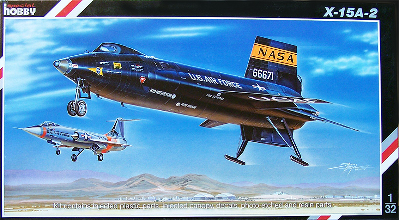
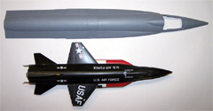
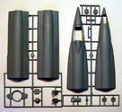
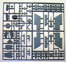
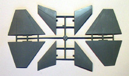
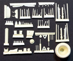
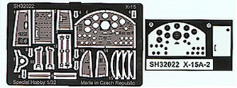
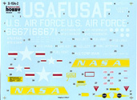

{kind=link}
{kind=link}
{kind=link}
{kind=link}
{kind=link}
{kind=link}
{kind=link}


Special Hobby 1/32 X-15A-2

Kit #32022
MSRP $63.95 $45.33 from HobbyShop.CZ
Images and text Copyright © 2008 by Matt Swan
Developmental Background
The North American X-15 Rocket Plane resulted from a request made by the Air Force in 1954 to study high speed flight and space flight. The airframe was contracted in 1955 and three aircraft were built. Two B-52s were used as support aircraft to launch the vehicle from an underwing pylon. The X-15 was our first manned space craft having flown thirteen missions that qualified by many standards as spaceflight. Two missions exceeded the 62 mile altitude for International space flight recognition.
The number two aircraft was damaged in a crash landing and set out for refit. This airframe was stretched twenty eight inches and modified to carry external fuel tanks. The aircraft was returned to NASA in February 1964 for high speed flight testing. One project was the addition of a ram jet; another was for extreme high speed runs where the aircraft was completely covered with an ablative coating to act as a heat shield. During this test on October 3rd 1967 the X-15A-5 achieved a top speed of mach 6.93 which severely damaged the white heat shield coating. Structural damage was so intense from this run that the aircraft was grounded and never flew again. The X-15A-2 was the fastest of the X-15 family and achieved the highest altitude flight. These flight records remained unbroken until the space shuttle began flying missions. The X-15A-2 is now displayed at the National Museum of the United States Air Force at Wright-Patterson Air Force Base.
The Kit
The X-15 has always been of special interest to me even before I was seriously building model aircraft. I think it really fired my imagination for where technology could take us as a society. Over the years there have been several models of the X-15 manufactured, almost all of them 1/72 scale or box scale. I think it was in 2002 that Special Hobby released the first kit in 1/48 and I had to get right to the front of the line to buy that baby. That kit, while of the scale I wanted was not the easiest build I had experienced. There were some serious issues with parts fit and when I heard that Special Hobby was going to release the A-2 version in 1/32 I was concerned that these fit issued would simply be carried over into the new model. Well this is not the case, this appears to be a completely new piece of kit engineering with all or most of the old issues dealt with.
First let me point out that the X-15 was not a large aircraft so even at 1/32 scale still will fit comfortably onto most model shelves for display. The kit arrives in a nice sturdy box as is common for the larger Trumpeter offerings; this is good for shipping as the chances of crushing damage are reduced from any jack-booted package handler and makes for good durability in a stash situation. The light gray plastic parts all demonstrate a nice exterior finish with crisp recessed panel lines that do not seem excessive. Surface detailing has included the scallops found at the fuselage extensions which I do not believe were ever incorporated into a model of this craft before. Cockpit detail is good and so too is landing gear detail. The kit includes a photo etched fret and acetate instrument sheet to assist with cockpit realism. The well detailed engine nozzle is provided as a large resin fixture and includes a multitude of additional resin detail parts. The clear cockpit is well done however the windows do not have an eyelid as found on the record breaking A-2 space plane.

On the downside there is one major detail lacking from the kit. The X-15A-2 was fitted with large external fuel tanks that provided an addition sixty seconds of engine burn to reach mach 6.7 and were included with the 1/48 scale kit. They are not part of this kit and will require some serious scratch building to recreate. The record setting space plane also featured an eyelid on one cockpit window to help prevent fogging, this was found on the 1/48 scale kit but is not present of the 1/32 scale kit.
During dry fitting I found the parts to line up very nicely with no steps in the fuselage from mating forward and aft sections. All parts seemed to line up very nicely so it does indeed appear that the original 1/48 scale fit issues have been fully dealt with. Sprue gates on the parts trees are all rather large and I think trying to remove the parts with standard sprue cutters could cause some damage. I elected to take a little more time and remove the parts with a JCL razor saw. Overall we have eighty one light gray injection molded pieces over five sprues, seventy three resin pieces packaged in two small zip-lock bags, one clear resin canopy and twenty three photo etched pieces that include not only the instrument panels but the seatbelts as well. Add the two acetate instrument detail pieces and you have a total of 180 pieces to this kit.





You may click on any of these small images to view larger pictures
Decals and Instructions
The kit instructions consist of 12 page A-4 sized pamphlet. It opens with a good historical background of the craft in both English and Czech. It contains a complete parts map and on page nine tosses in a paint chart with both color names and Gunze paint codes.  The assembly instructions are spread over seven pages with plenty of exploded views that are all clear and concise. Two pages are devoted to decal placement and show only the early black version of the craft.
We get a large sheet of decals that include all the service stencils and warning markings you could hope for. The decals show good print registry and color density. The yellow fin markings do not have a white backing so the modeler must take care to paint a correctly sized white band on the craft’s fin. While this may seem like some extra work it will produce the most accurate tint to the yellow band when completed. Previous experience with Special Hobby decals have revealed no issues with setting solutions or silvering.
Conclusions
Special Hobby has done a very nice job with this kit. The fit issues found in the previous 1/48 scale kit have been successfully addressed, the parts all line up nicely and no more skill that that required with any good quality limited run kit will be required. The detail level included with the model is very good, the only faults the kit has are those made by omission of the external fuel tanks and lack of eyelid on the canopy. While this kit is of a larger scale the compact size of the actual craft means the finished kit will present no problems fitting onto a standard display shelf. As a huge fan of the X-15 space planes I have to give this kit a very good recommendation.